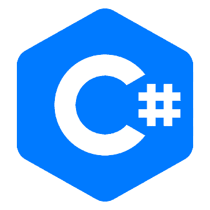

A web developer is a programmer or a coder who specializes in the development of World Wide Web applications using a client-server model. The applications typically use HTML, CSS and JavaScript in the client, PHP, ASP.NET (C#), Python, Node.js, Go or Java in the server, and http for communications between client and server. A web developer may specialize in client-side applications (front-end developer), server-side applications (back-end developer), or both (full-stack developer). A web content management system may be used to develop and maintain web applications.
Developer & Designer - what's the difference?
What does a Designer do?
Web designers have a varied set of tasks and responsibilities. However, a designer's role revolves around creating the layout and visual aspects of a website.
Their goal is often to make sure the site is both visually pleasing and user friendly and encourages visitors to stay around for as long as possible. In addition to the general framework and layout structure, this also means considering and constructing conversion-generating elements, as well as designing web pages in a way that translates well across various devices.
Web designers need to stay updated on the latest web design trends and adhere to certain standards and best practices. They often deal with brand imagery, color palettes, fonts, and so on. Many will even create a web design style guide to ensure that each website looks consistent:
Types of Web Designers:
- UX Designers
- UX designers help ensure the website is structured in a way that engages visitors and delivers a positive experience. Their role is to create human-centric designs that are based on data-driven decisions. This involves conducting a lot of research and testing to gather and analyze data, which is used to inform their final design choices.
- UI Designers
- UI designers also play an important role in the design of a website. In addition to the experience it provides, they also prioritize interactions. More specifically, their role is to enhance the usability of a website and optimize it in a way that helps encourage conversions.
- Visual Designers
- Visual designers, as the title suggests, work with the layout and visual elements of a website. This work combines certain aspects of both UX and UI design. The duties of a visual designer are based on ensuring that the interface is both aesthetically pleasing and easy to use.
The skills Web Designers need
The skill sets web designers require to be successful vary, depending on each person's specific role and specialty. However, generally speaking, some important skills include:
- HTML and CSS knowledge
- Understanding the Principles of website design and web accessibility standards
- Responsive and interaction design
- Conversion Rate Optimization (CRO)
- Wireframing and prototyping
- Branding, color theory, and typography
- Design tools and software
What does a Web Developer do?
A web developer's primary job is to build and maintain the core structure of a website. Their role involves a lot of technical work, including using complex coding and advanced programming languages. In a nutshell, they take the ideas and concepts laid out by designers and turn them into real, live, and fully-functioning websites.
More specifically, the duties of a web developer involve constructing the website itself. This includes coding and configuring the server and databases on the back end, as well as incorporating user-facing features and functionality. They also perform testing and debugging and may handle an array of post-launch services, such as providing ongoing support and maintenance and fixing server or hosting issues
Types of Web Developers
- Front-end Developers
- Front-end developers code the actual website using CSS, HTML, JavaScript, and other languages, as well as Content Management Systems (CMS) such as WordPress. Front-end development, also known as client-side development, largely involves coding and programming the visual elements of a website that users will see.
- Back-end Developers
- Back-end developers code the database and server using advanced programming languages such as PHP, C#, Java, Ruby, and SQL, as well as NodeJS and other server-side frameworks. Back-end development, also known as server-side development, mainly encompasses the aspects of the website happening 'behind the scenes, which visitors don't see from the front end.
- Full-stack Developers
- Finally, full-stack developers code both the front and back end of a website. They have a solid understanding of how these parts work and function together. In addition to coding web pages using CSS, HTML, and JavaScript, full-stack developers also set up and configure servers, code Application Programming Interfaces (APIs), query databases, and more.

PHP - a server scripting language, and a powerful tool for making dynamic and interactive Web pages

C# - a simple, modern, general-purpose, object-oriented programming language developed by Microsoft within its .NET initiative

Java - a popular programming language, used to develop mobile apps, web apps, desktop apps, games and much more.
Ruby - a dynamic, open source programming language with a focus on simplicity and productivity. It has an elegant syntax that is natural to read and easy to write.
Django - a high-level Python web framework that encourages rapid development and clean, pragmatic design
MySQL - the standard database system for web sites with HUGE volumes of both data and end-users
NodeJS - an open-source and cross-platform JavaScript runtime environment

Angular - a toolset for building the framework most suited to your application development. It is fully extensible and works well with other libraries